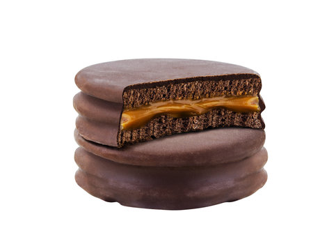

Receta Alfajores

Descripción
Aprende a preparar esta receta de Alfajores cordobeses
Por Charlie Rowe en elGourmet
Ingredientes
- Manteca
- Azúcar
- Miel
- Huevo
- Yemas
- Harina 0000
Pasos
- CBatir con lira manteca, azúcar, miel hasta crema
- Agregar huevo, yemas y seguir batiendo
- Añadir almidón de maíz, harina, polvo de hornear (todo tamizado) y seguir amasando hasta formar una masa blanda
- Con palote estirar entre 2 papeles manteca bien fino y llevar a frío por 45 minutos
- Cortar con aro de 10 cm y llevar a placa con papel manteca enmantecada con espacio entre masa y masa.
- Cocinar a 170ª C hasta que tomen apenas color en los bordes.
- Armar los alfajores agregando el dulce elegido con manga. Sobre rejilla bañarlos con el glaseado fluido apenas tibio (jugo de limón + azúcar impalpable hasta tener la textura deseada)
- Dejarlos orear a temperatura ambiente hasta que se seque el baño